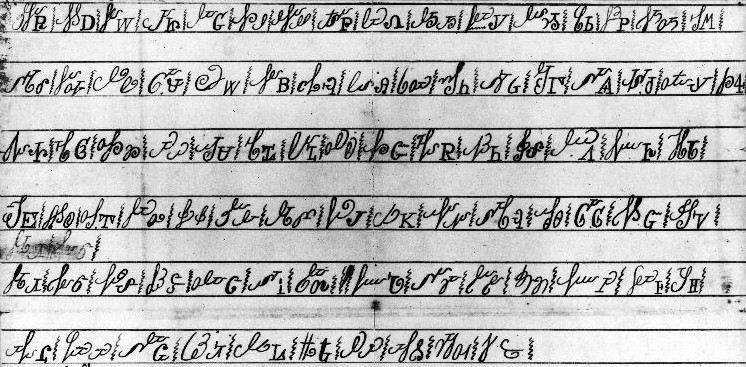

Directions: Fill in the chart as we study who claimed the Southeast at each step, and on what ground. Keep this page in your notebook. You will use it again on the review day before the unit test.

| Step | Who acted, and what they did | The ground they claimed |
|---|---|---|
| The nation and the pressure, 1827 to 1830 | ||
| The Removal Act, 1830 | ||
| The court, 1831 and 1832 | ||
| The treaty and the protest, 1835 and 1836 | ||
| The march, 1838 and 1839 |
The judgment that stood alone. Pick one row of the chart and write a short paragraph on it. State whose claim prevailed at that step, and explain whether it prevailed by the law's own terms, by enforcement, or not at all.
| Step | Who acted, and what they did | The ground they claimed |
|---|---|---|
| The nation and the pressure, 1827 to 1830 | The Cherokee adopted a constitution in 1827 and began the Cherokee Phoenix in 1828, on land coveted for cotton and gold. Georgia extended its laws over Cherokee country in 1829 and 1830, abolished the Cherokee government on paper, and prepared a land lottery. Ross's government answered with lawyers, memorials, and a lawsuit. | Georgia claimed the 1802 compact, in which the federal government promised to extinguish Native title inside the state. The Cherokee claimed their treaties and their nationhood, a government with a constitution, a syllabary, and a press. |
| The Removal Act, 1830 | Congress passed and Jackson signed the Indian Removal Act on May 28, 1830, passing the House 102 to 97 and appropriating five hundred thousand dollars for exchanges of eastern land for districts west of the Mississippi. Jackson's December message defended it as benevolence. | Congress claimed power to arrange exchanges by treaty, and the act promised in its seventh section that nothing in it authorized violating any existing treaty. The defense claimed removal would protect Native nations from the states. |
| The court, 1831 and 1832 | Marshall dismissed the nation's suit in 1831, calling the Cherokee a domestic dependent nation, then held in Worcester v. Georgia in 1832 that Georgia's laws had no force in Cherokee country. Georgia defied the judgment, Jackson declined to enforce it, and Worcester left prison in 1833 on a pardon. | The Court claimed the Constitution and the treaties: a distinct community in its own territory, its intercourse with the United States vested in the federal government alone. The ground was sound and stood unenforced. |
| The treaty and the protest, 1835 and 1836 | The Ridge and Boudinot party signed the Treaty of New Echota on December 29, 1835, ceding all Cherokee land east of the Mississippi for five million dollars. Ross's memorial protested that the makers were unauthorized and upwards of fifteen thousand Cherokee opposed it. The Senate ratified by one vote in May 1836. | The treaty claimed the Cherokee nation's consent, in the form its preamble performs. The memorial claimed Cherokee law and fact: no office, no sanction, no consent, and a nation on record against the instrument. |
| The march, 1838 and 1839 | At the May 1838 deadline, General Scott's troops rounded up some sixteen thousand Cherokee into camps and detachments and marched them west through the winter. Roughly a quarter, about four thousand people, died, among them Quatie Ross. The other nations were removed on their own roads, and the Eastern Band remained in North Carolina. | The march was executed under the ratified treaty and federal orders. Its ground was the legal cover of Station 5, and its instrument was the army, which is the fact the lesson's verdict question asks students to weigh. |
The judgment that stood alone. Strong answers name the row, the claim, and the mechanism. On the court rows, the Cherokee claim prevailed by the law's own terms in 1832 and not at all in effect, because a judgment without enforcement changed nothing in Georgia. On the treaty and march rows, removal prevailed first by a legal form over the nation's documented refusal, then by enforcement alone.